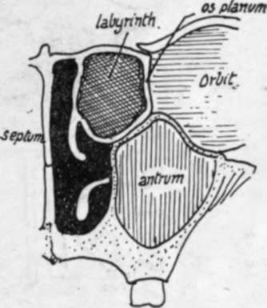
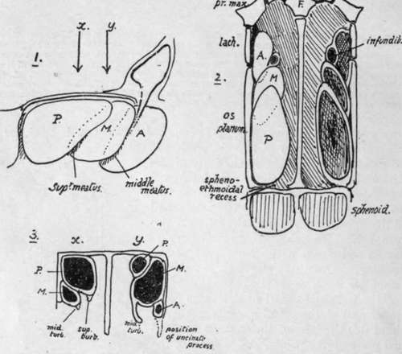

Nasal Bone. Part 2
Description
This section is from the book "The Anatomy Of The Human Skeleton", by J. Ernest Frazer. Also available from Amazon: The anatomy of the human skeleton.
Nasal Bone. Part 2
(The third diagram in Fig. 194 will give some idea of these arrangements on the outer wall : the line of the attached part of the inferior turbinate, which has been cut away, is shown at A, and its processes are seen joining the lachrymal (L.) and uncinate process (U.). The maxillary process, turned down, is seen at M).
The anterior process of the inferior turbinal, by articulating with the lachrymal, completes the inner wall of the nasal duct and separates it from the nose, so that its lower opening must be below the level of the inferior turbinate.
The upper and middle turbinate bones are part of the ethmoid.
Fig. 195.-Scheme of the position of the lateral mass or labyrinth and the arrangement of turbinals. The inferior turbinate hangs from the outer wall below the ethmoid, but the others are parts of that bone ; one is shown hanging from the inner wall of the labyrinth. The whole labyrinth forms a mass in the upper part of the nose, so that the plane of attachment of the upper two turbinals is nearer the septum than that of the inferior turbinal, although the outer wall of the nasal cavity is further from the septum in the upper than in the lower part.
If the outer wall of the cavity with its soft parts (Fig. 194) is studied, it is seen that the inferior turbinal body is separated by the middle meatus from the middle turbinal, which is the lowest part of a mass that projects into the nasal fossa towards the septum : evidently this mass lies between the outer wall (os planum) and the upper and middle nasal bones.
Fig. 196.-Schemes of the arrangements of the groups of cells which constitute the labyrinth. i. Groups of left mass seen from the right (inner or septal side). P., the posterior group, is on the whole above and internal to the middle group, M.t as well as behind it, and this group is again above and internal to the anterior group, A. ; i.e., each group overlaps the one in front of it internally and above and thus grooves may be considered to exist along the lower margins of P. and M., directed forwards and upwards and due to the prominence of the more posterior group. Such grooves make the upper and middle meatuses, and the corresponding turbinals are suspended over them from the prominent overhanging margins. The frontal sinus and infundibulum may be considered an upgrowth from the groove between 71/. and A., and thus it is separated from the outer wall by A. Sections through 1, about the levels of the arrows, would cut the groups somewhat as shown in 3, in which the position of the uncinate process of the ethmoid is also indicated, showing how the anterior group can extend into it downwards. 2 is the same scheme of arrangement seen from above, showing the relations of the groups to the outer wall (os planum and lachrymal). Compare this with the next figure and the one after that.
turbinates, which are simply dependent folds on its inner or septal aspect. On removing the mucous membrane (No. 2) the underlying bony structure presents the same appearance of turbinate bones as comparatively small folds or projections suspended from the inner or superficial aspect of a deeper mass ; the general surface exposed is flat, marked by the mucous covering, and the middle turbinate bone hangs from its lower border and is thus held away from the outer wall of the nose by the depth of the intervening mass.
By cutting away the dependent turbinals the underlying mass is left by itself (No. 3), and the groove on its back part, which was partly covered by the upper turbinal, is seen to have an opening in it, while the removal of the middle turbinal has exposed the rounded lower and front part of the mass (bulla ethmoidalis) and, below this, the contracted opening of the antrum and a curved groove (hiatus semilunaris) leading up to the opening of the frontal sinus. The mass whose limits are thus roughly made out is the labyrinth of the lateral mass of the ethmoid, and consists of air cells with thin bony walls. A scheme of the relations between outer wall, labyrinth, and turbinal is shown in Fig. 195.
But the cavity represented in the labyrinth in this figure is purely schematic ; there are really a number of cavities, separated by walls that are very variable in position individually, but they may be divided into groups. There are three such groups, anterior, middle, and posterior, and the air cells belonging to any one of these groups do not communicate with those of the other groups, and not always with each other : the cells of each group, however, open together-those of the posterior group in the upper meatus (Fig. 194), those of the middle and anterior groups in the middle meatus. The posterior ethmoidal cells are behind, above, and internal to the middle cells, and these are again behind and internal to the anterior group : these last are therefore the cells exposed on the outer aspect of the lateral mass where the os planum is deficient in front, and are covered in by the lachrymal.
The general relations of these groups to each other are shown schematically in Fig. 196 : it must be again remembered that each group is not a single cavity, but is composed of a variable number of cells. The schematic position of the three groups is shown on section in the three planes, and it is clear that a transverse section through the front part of the mass will show anterior ethmoidal cells chiefly, with middle cells"perhaps internal to them, and hiatus semilunaris situated between the two groups : a section across the middle of the mass may have only middle cells, with middle turbinal hanging from their inner and lower part ; one further back goes through posterior cells, with the middle group perhaps represented externally and below, separated from the posterior group by the groove of the upper meatus, over which the upper turbinal hangs down from the inner wall of the posterior group. Two sections of the region are also shown (Fig. 197) to compare with the schemes and exhibit the inner subdivisions of these cell-groups.
Continue to:
- prev: Nasal Bone
- Table of Contents
- next: Nasal Bone. Part 3